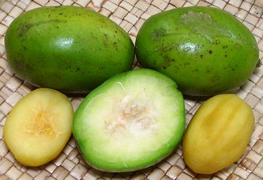
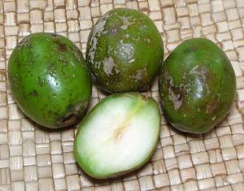
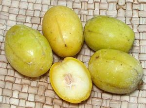
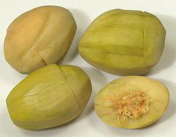
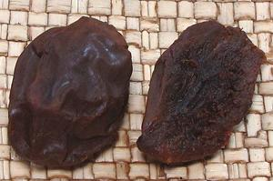
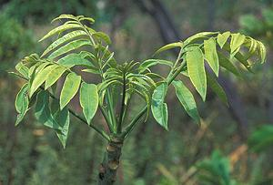

June Plum

[Ambarella, Tahitian Apple, Otaheite Apple, Golden Apple; Vi (Hawaii,
Tonga); Makok farang (Thai);
Cay coc (Viet); Kedondong, Ambar (Indonesia, Malaysia); June Plum,
Pomme cythere, Manzana de oro (Caribbean); Ambarella (Sri Lanka, Dutch);
Juplon (Costa Rica); Jobo indio (Venezuela), caja-manga, cajarana
(Brazil); Spondias dulcis syn Spondias cytherea]
Native to Melanesia and Polynesia, this fruit is now heavily planted in
the Caribbean and Southeast Asia. The flesh is crisp and slightly tart,
surrounding a fibrous seed. Due to the seed, they cannot be easily sliced
or pitted, so are often eaten out of hand. In Indonesia and Malaysia they
would be accompanied by a little shrimp paste. They are also pickled,
cooked for preserves, juiced, and used in sauces, soups and stews.
More on Cashew / Mango Family.
Green June Plums

This is the state of ripeness
in which I usually find these fruits. They fall while still green and
ripen on the ground. The photo specimens were about 1.8 inches long and
1.2 inches diameter, weighing about 0.9 ounces each, though they are
often up to 3-1/2 inches long. In their native Pacific Islands they are
reported to be much larger and weigh up to 1 pound. These were purchased
in November from a large Asian market in Los Angeles (San Gabriel) for
2016 US $3.99 / pound. Subst: Unripe mango.
In Indonesia, these fruits are sought out by pregnant women because
they are reputed to reduce related feelings of sickness. They can be
peeled if the skin is a bit grungy, or you wish to reduce tartness. They
are often impaled on a bamboo skewer for convenience of dipping in soy
sauce, fish sauce, shrimp sauce, or a mix of salt and chili powder.
Chutneys are made from this fruit in Sri Lanka and Jamaica, and in
Sri Lanka they are used to make curries with spices and coconut
milk.
These fruits are a very common ingredient in the famous Malaysian
and Singaporean Rojak fruit salads. They are also often juiced to make
a very pleasant iced beverage. Stewed with a little water and sugar,
then pressed through a sieve, they make a condiment very similar to
apple sauce, but with more flavor.
Ripe June Plums

These ripe June Plums, purchased from a large Asian market in Los Angeles
(San Gabriel) in May, are unusual because this market usually has them
only in dark green. They were typically 1.8 inch long by 1.2 inches
diameter, weighing about 0.8 ounces each, 2017 US $3.99 / pound. These
were sweeter than the green and quite good for eating out of hand. If
green ones are in good condition, they can be left on a counter at room
temperature to ripen.
Pickled Ambarella

This form of June Plum is more consistently available than the fresh here
in Los Angeles. The photo specimens, from Vietnam, were up to 2.5 inches
by 1.95 inches, peeled and pickled "sweet and sour". The firm crisp
flesh was slashed in places to allow penetration of the pickle. They
appeared to have been picked while still somewhat green, and were
slightly sour with an interesting slightly mango-like flavor. I have
also purchased much smaller ones in which the seeds were so small and
soft they could be eaten along with the flesh. Ingred: Spondias dulcis
fruit, chili, sugar, salt, vinegar, water, potassium sorbate, FD&C
yellow #6.
Ma-kok, Preserved

These June plums were dried, but still moist, shrink wrapped as a snack
food. They had a sweet-sour flavor and contained some inedible fibers.
The photo specimens were 1.9 inches long by 1.4 inches across, weighing
1-1/4 ounce each. Ing: Ma-kok, sugar, salt, water, citric acid, chili
powder, FD&C yellow #5, FD&C blue #1, sodium benzoate, sodium
metabisulfites as preservative. they were purchased from a large Asian
market in Los Angeles (San Gabriel).
June Plum Leaves

June plum leaves are edible. In Indonesia, young tender leaves are used
as a seasoning in preparations cooked wrapped in banana leaves, and are
steamed as a vegetable accompaniment for salted fish and rice. In
Thailand, tender leaves are also eaten as a vegetable. In Costa Rica,
more mature leaves are used in salads, though they are fairly tart.
Photo by
Forest & Kim Star
(cropped) distributed under license Creative Commons
Attribution Share-Alike v3.0 Unported. Attribution required,
notification appreciated.
Health and Nutrition
June plums have almost no fat, but also almost no protein. Their
main nutritional contributions (per 100 grams) are 12 grams
carbohydrates, calcium (5.7% RDI), phosphorous (6.7% RDI), and
vitamin A (4.1% RDI).
June Plum fruit and leaf extracts are reported to offer significant
antimicrobial and antioxidant properties. Cytotoxicity (used in cancer
treatment) and thrombolytic properties (dissolving blood clots) are
also reported.
cw_junepz 170709 - www.clovegarden.com
©Andrew Grygus - agryg@clovegarden.com - Photos on this
page not otherwise credited are © cg1 -
Linking to and non-commercial use of this page permitted